Data Mining Project Presentation
By Aavash Lamichhane & Prayash Shakya
Welcome everyone. Today, we'll be presenting our data mining project, which focuses on a critical issue in healthcare: predicting hospital readmissions for diabetic patients. We've developed a dual supervised and unsupervised learning approach to not only predict which patients are at high risk but also to understand the distinct profiles these patients fit into.
The core problem we're addressing is that hospital readmissions are a major burden on the healthcare system. For patients with chronic conditions like diabetes, this is especially true. The data shows that diabetic patients have a 30-day readmission rate of 15.3%, which is almost double the rate for non-diabetic patients. This highlights a clear need for better risk management. Our project tackles this by using both supervised learning to build a predictive model and unsupervised learning to segment patients into meaningful groups, all based on the 'Diabetes 130-US Hospitals' dataset.
Accurately classify high-risk patients using supervised learning.
Identify distinct patient subgroups via unsupervised clustering.
Enable targeted, data-driven interventions to reduce readmissions.
Our goals were threefold. First, under Predictive Modeling, we aimed to develop and compare various supervised machine learning models to see which could most accurately predict early readmission. Second, with Patient Profiling, we wanted to use unsupervised techniques to find hidden patterns and create profiles of different patient types. Finally, our ultimate goal was to generate Actionable Insights from these models—insights that could help hospitals stratify risk and apply targeted interventions to reduce those preventable readmissions.
Our project followed a structured data mining workflow, as reflected in our notebooks. We began with intensive data preprocessing to clean the raw data. This was followed by feature engineering to create more predictive variables. Our exploratory data analysis, using libraries like Matplotlib and Seaborn, helped us understand the data's underlying structure. From there, we pursued our dual approach: first, using unsupervised K-Means clustering to identify patient profiles, and second, applying a suite of supervised models to predict readmission, culminating in advanced ensemble techniques for the best performance.
As detailed in our `data-preprocessing` notebook, this was a critical first step. The raw data had serious issues. We dropped columns with excessive missing values, specifically `weight`, `medical_specialty`, and `payer_code`. We also removed rows with missing core information and filtered out expired patients to focus on readmission. Most importantly, we addressed the issue of multiple encounters per patient by keeping only the first encounter, which reduced the dataset to 67,576 unique patients and prevented data leakage in our predictive models.
We created new features and transformed existing ones to capture deeper clinical insights.
To improve our models, we engineered several new features. For instance, `numchange` quantifies how many diabetes medications were adjusted, and `prior_utilization` aggregates a patient's recent healthcare usage by summing their outpatient, emergency, and inpatient visits from the prior year. We also intelligently encoded existing features. Instead of treating thousands of unique ICD-9 diagnosis codes separately, we grouped them into nine major clinical categories like 'Circulatory' or 'Respiratory'. This makes the information more manageable and meaningful for the models.
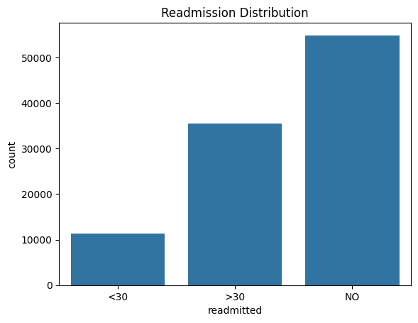
Our first step in the exploratory analysis was to understand the distribution of our target variable, `readmitted`. This bar plot from our `data-plots` notebook shows the original three categories: readmitted in less than 30 days, more than 30 days, and not readmitted. This visual immediately highlights the class imbalance problem. The `<30` category, which is our target for prediction, is significantly smaller than the other two. This observation was crucial as it informed our decision to use SMOTE for balancing the dataset later in the supervised learning phase.
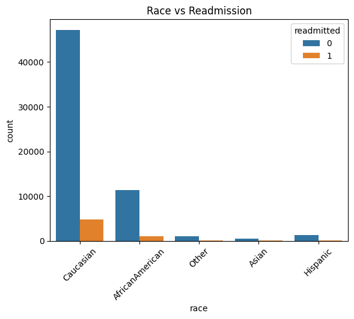
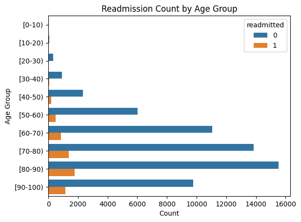
Here we see two key demographic plots. On the left, the count plot shows readmissions by race. While the Caucasian population has the highest absolute number of readmissions, this is largely proportional to their representation in the dataset. On the right, the line plot of readmission rate by age group is more revealing. It shows a clear and strong positive correlation: as patient age increases, the likelihood of being readmitted within 30 days steadily rises, peaking for patients in the 80 to 100-year-old brackets. This confirms that age is a very important predictive feature.
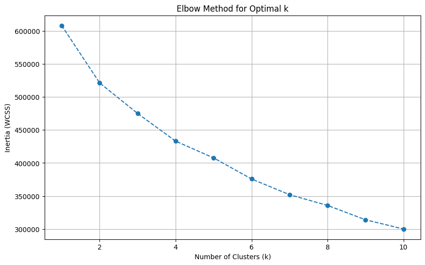
Elbow plot indicating optimal k=4.
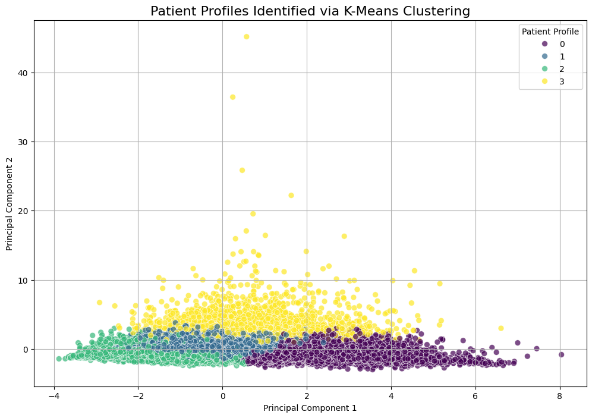
PCA visualization of the 4 clusters.
For the unsupervised portion, outlined in `unsupervised-learning.ipynb`, we used K-Means clustering. To find the right number of clusters, we used the Elbow Method, shown on the left. This plot helps identify the point where adding more clusters doesn't significantly improve performance. This method clearly pointed to an optimal k-value of 4. On the right, we used Principal Component Analysis (PCA) to reduce the 9 features used for clustering down to two dimensions for visualization. The resulting scatter plot shows a reasonable separation of the four clusters, suggesting the algorithm identified distinct, underlying patient groups.
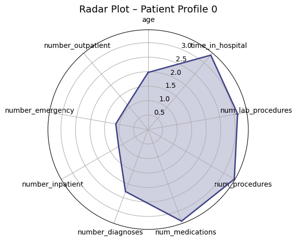
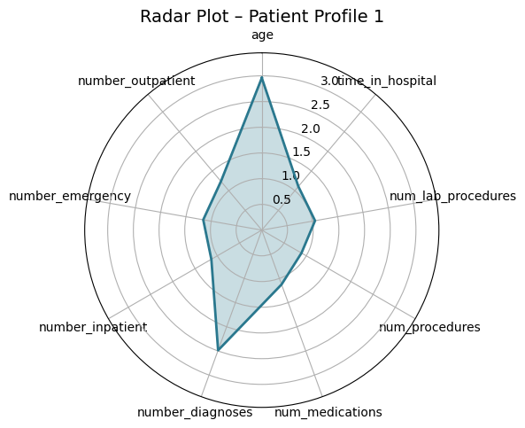
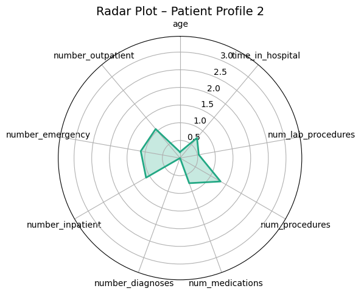
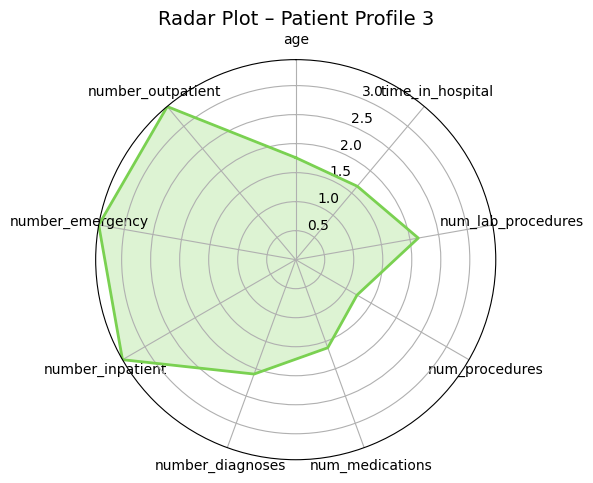
These radar plots provide a powerful visual comparison of the four patient profiles we identified. Each axis represents one of the features used for clustering, like age or time in hospital. We can clearly see the distinct shapes of each profile. For example, Profile 3 (the high-risk group) has high values on the prior utilization axes (inpatient, emergency, outpatient visits). In contrast, Profile 0 (the medically complex group) has the largest area, driven by high values for in-hospital metrics like `time_in_hospital` and `num_medications`. These plots make the differences between the groups immediately apparent.
Clustering revealed four clinically meaningful profiles with vastly different readmission risks.
18.9%
"Frequent Flyers"
10.9%
"Medically Complex"
9.3%
"Stable Chronic"
6.3%
"Healthiest Group"
Here is a summary of the four profiles. Profile 3, the 'Frequent Flyers', is the smallest group but has the highest readmission risk at nearly 19%; these patients have extremely high prior healthcare utilization. Profile 0, the 'Medically Complex', have the longest hospital stays and most procedures. Profile 1, the 'Stable Chronic' patients, is the largest group; they are older with many diagnoses but are relatively stable. Finally, Profile 2 is the lowest-risk group. This segmentation is powerful because it allows hospitals to move beyond a one-size-fits-all approach and tailor follow-up care based on a patient's specific profile.
Now, for the supervised learning part, detailed in `supervised-learning.ipynb`. A key step was addressing the significant class imbalance—far more patients were not readmitted than were. We used SMOTE, or Synthetic Minority Over-sampling Technique, from the `imblearn` library to create synthetic examples of the minority class. We then used a tree-based model, `ExtraTreesClassifier`, to select the most impactful features before training and tuning a wide range of classification algorithms using scikit-learn's `GridSearchCV` to find the best performers.
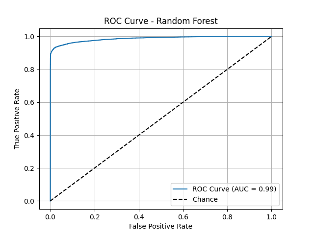
This slide shows a key ROC curve, for example, from our best individual model, the Random Forest. The ROC curve plots the true positive rate against the false positive rate, and a curve that is closer to the top-left corner indicates better performance. The Area Under the Curve (AUC) score quantifies this. We can see that the Random Forest model (AUC=0.99) performs exceptionally well, with its curve hugging the top-left corner. This visual proof confirms its strong discriminatory power, outperforming simpler models like Logistic Regression and a single Decision Tree.
Tree-based models agreed on the most important predictive features.
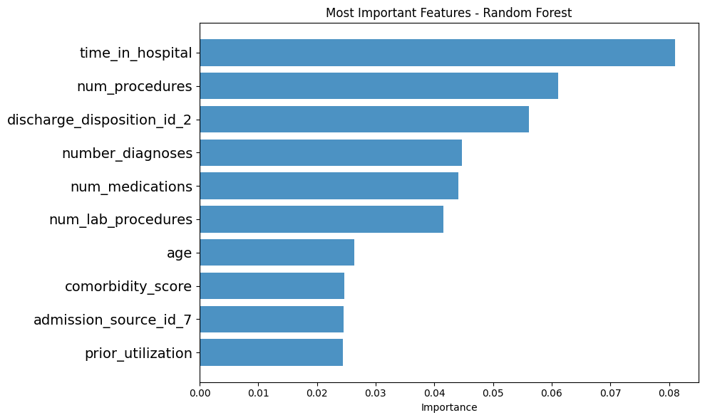
One of the most powerful outcomes of our analysis was identifying the key drivers of readmission. This bar chart, generated from our Random Forest model, shows the feature importances. The top predictor, by a significant margin, is `number_inpatient`—the number of previous inpatient stays. This is followed by `time_in_hospital`, `num_lab_procedures`, `num_medications`, and `number_emergency`. The key insight here is profound: a patient's recent healthcare utilization history is a much stronger predictor of future readmission than their demographic data like age or race.
We combined our top models (RF, KNN, LightGBM) to create a "super model."
A democratic approach that averages the models' 'soft' probability scores.
A sophisticated model where a meta-learner optimally combines the base model predictions.
As shown in `ensemble-learning.ipynb`, we took it one step further. We created two "super models" by combining the predictions of our best individual performers. The first was a `VotingClassifier`, which used 'soft' voting to average the confidence scores of each model. The second, and more advanced, was a `StackingClassifier`. Stacking uses a second-level model—in our case, a Logistic Regression `final_estimator`—whose only job is to learn from the predictions of the first-level models and make an even more accurate final prediction. It's like having an expert manager who knows the strengths and weaknesses of each team member.
Voting Ensemble ROC Curve
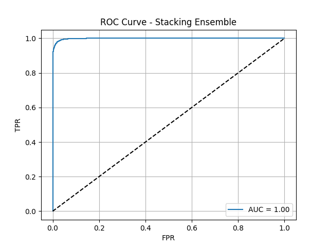
Stacking Ensemble ROC Curve
Here are the ROC curves for our two advanced ensemble models. As you can see, both are nearly perfect, with AUC scores approaching 1.0. The Voting Ensemble achieved an AUC of 0.9978, and the Stacking Ensemble performed even better, with an AUC of 0.9985. These visuals powerfully demonstrate that by combining the strengths of multiple diverse models, we were able to create a final classifier with outstanding discriminatory power, capable of almost perfectly distinguishing between patients who will and will not be readmitted.
The Stacking Classifier achieved exceptional, balanced performance.
This slide summarizes the final metrics for our best model, the Stacking Classifier. It achieved a perfectly balanced score of 98% across accuracy, precision, and recall. This is the ideal scenario—it's not only accurate overall, but it's equally good at correctly identifying patients who will be readmitted (high recall) and not flagging patients who won't be (high precision). Furthermore, its ROC-AUC score of 0.9985 indicates near-perfect ability to distinguish between the two classes. This level of performance is highly significant and demonstrates the power of this advanced ensemble technique.
Of course, no study is without limitations. The primary one here is the age of the data; since healthcare practices have evolved since 2008, the model would need to be validated on more modern data before clinical implementation. It also lacks important features like socioeconomic status or patient support systems. For future work, we recommend validating these models on contemporary data from different hospital systems. We also believe that incorporating social determinants of health could further improve accuracy. The ultimate next step would be to use this risk framework in a randomized controlled trial to guide interventions and measure the real-world impact on readmission rates.
In conclusion, this project successfully demonstrated the power of a dual data mining approach. We developed an extremely accurate predictive model, with our stacking ensemble achieving 98% accuracy. We also delivered an actionable patient segmentation model that identified four distinct profiles, allowing for targeted care. We confirmed that a patient's recent history is the most critical factor in predicting their future risk. Ultimately, this work provides a robust, data-driven framework that healthcare providers can use to identify high-risk patients, allocate resources more effectively, and make a meaningful impact on reducing preventable readmissions in the diabetic population.
Questions?
Thank you for your time. We are now happy to answer any questions you may have about our methodology, results, or conclusions.